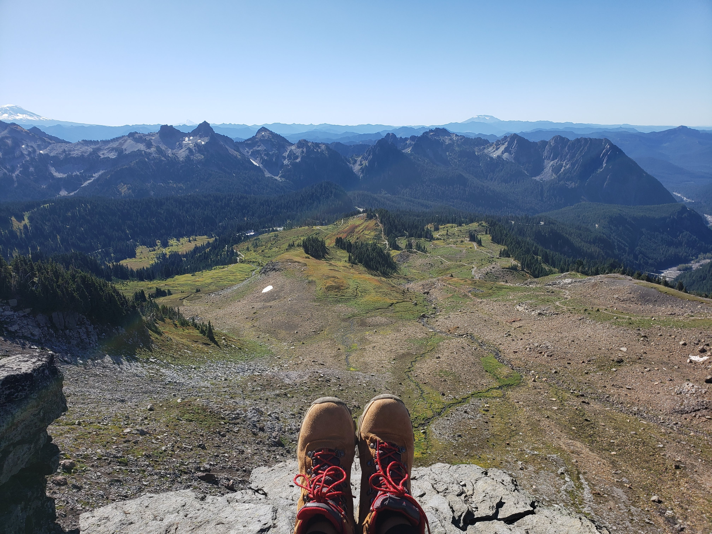

Discover various activities you can enjoy while visiting Washington State.
Upcoming Events
Check out these exciting events happening across Washington State:
Cranberry Festival
Dates: October 12 - 13, 2024
Location: Grayland/Long Beach
Description: Choose between two cranberry fairs this weekend: Grayland's Cranberry Harvest Festival offers live music,
a beer garden, and a parade, while Long Beach's Cranberry Harvest Weekend features wet harvest demonstrations, fresh
cranberries, and a museum visit.
Halloween Train
Dates: October 13 - 27, 2024 (weekends)
Location: Snoqualmie
Description: Enjoy seasonal activities, watch apple cider pressing, and take a 90-minute
Halloween Train ride at the Northwest Railway Museum in Snoqualmie.
Party At The Glass Museum
Dates: October 17, 2024 (7 to 9 p.m.)
Location: Seattle Center
Description: Enjoy passed appetizers, food and drink tastings, and admission to Chihuly Garden and Glass
in Seattle for $69, with doors opening at 6:30 p.m. (21+ ID required).
Annual Events Calendar
Discover exciting annual events across Washington State! From festivals to concerts, there's something for everyone
to enjoy throughout the year. Mark your calendar and join the fun!
January
Seattle Chamber Music Winter Festival
Woodland Park Zoo WildLanterns
February
Children's Film Festival
Chinatown-International District Lunar New Year
Northwest Flower & Garden Festival
Seattle Boat Show
Wintergrass Bluegrass Festival
March
Emerald City ComiCon
Sakura-Con
Taste Washington
April
Best of the Northwest
Seattle Cherry Blossom Festival
Seattle Restaurant Week
Skagit Valley Tulip Festival
May
Northwest Folklife Festival
Seattle International Film Festival
Seattle Maritime Festival
University District Street Fair
June
Beyond Wonderland (The Gorge)
Pagdiriwang Philippine Festival
Indigenous People Festival
Fremont Fair
Honk Fest West
Pride Festival
Seattle International Dance Festival
Washington Brewers Festival
July
Ballard SeafoodFest
Bite of Seattle
Capitol Hill Block Party
Darrington Bluegrass Festival
DayBreak Star Indian Pow Wow
Pista sa Nayon
SEAFAIR Summer 4th
SEAFAIR Torchlight Parade
SEAFAIR Torchlight Run
Seattle Art Fair
Seattle Chamber Music Festival
Sequim Lavender Weekend
Timber! Outdoor Music Festival
West Seattle Summer Festival
August
Chief Seattle Days
CHOMP! Local Food Festival
SEAFAIR Weekend
Seattle Design Festival
Summer Meltdown
Watershed (The Gorge)
September
Fremont Oktoberfest
Local Sightings Film Festival
Washington State (Puyallup) Fair
Bumbershoot
Walk the Block
October
Earshot Jazz Festival
Northwest Chocolate Festival
REFRACT - The Seattle Glass Experience
Seattle Children's Festival
Seattle Restaurant Week
Seattle Queer Film Festival
November
Best of the Northwest
Seattle Marathon
December
Argosy Christmas Ships Festival
Garden d'lights
Urban Craft Uprising
Winterfest at Seattle Center
Woodland Park Zoo WildLanterns
Photo Gallery
Explore some beautiful photographs showcasing the stunning landscapes of Washington State.
Lake22
Mount Rainier

Sunrise Trail @ Mt Rainier
Sunset @ Seward Park
Downtown View @ Jefferson Park
Waterfront
Travel Tips
Here are some tips to help you make the most of your visit to Washington State:
Check the weather before your trip, as conditions can vary greatly by region.
Wear layers to adapt to changing temperatures throughout the day.
Explore local cuisine and try fresh seafood, coffee, and craft beer.
Use public transportation in major cities to avoid parking hassles.
Plan your visits to popular attractions early to avoid crowds.